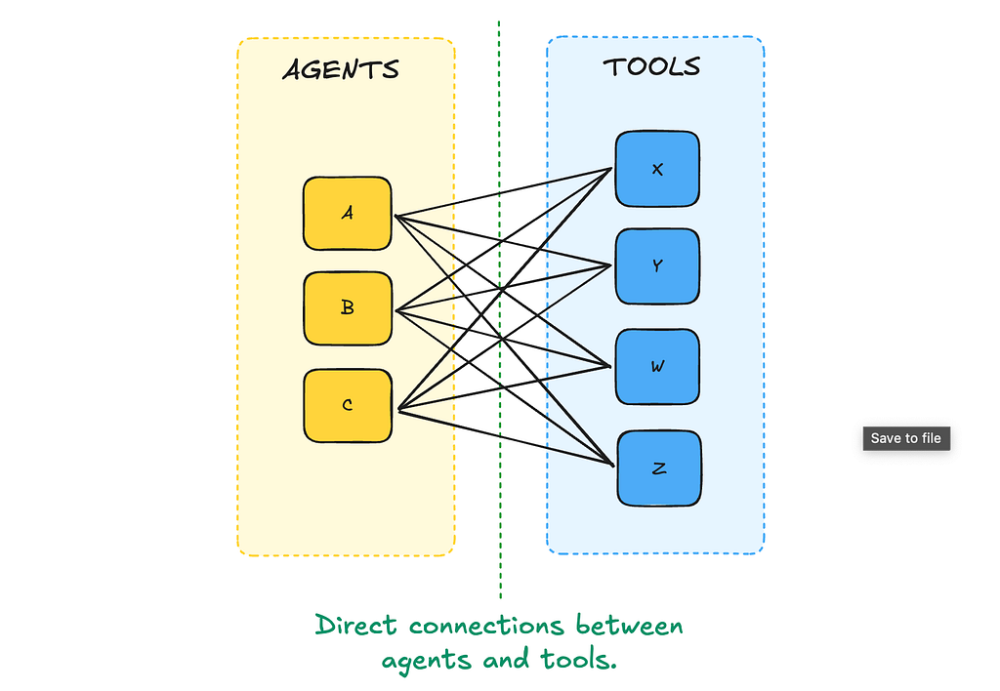
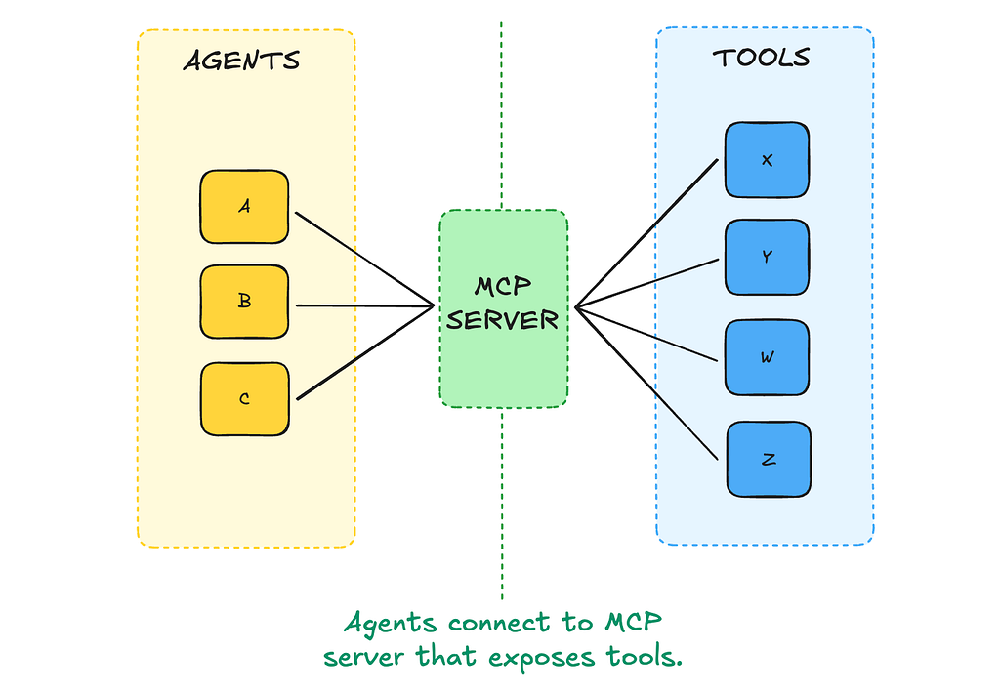
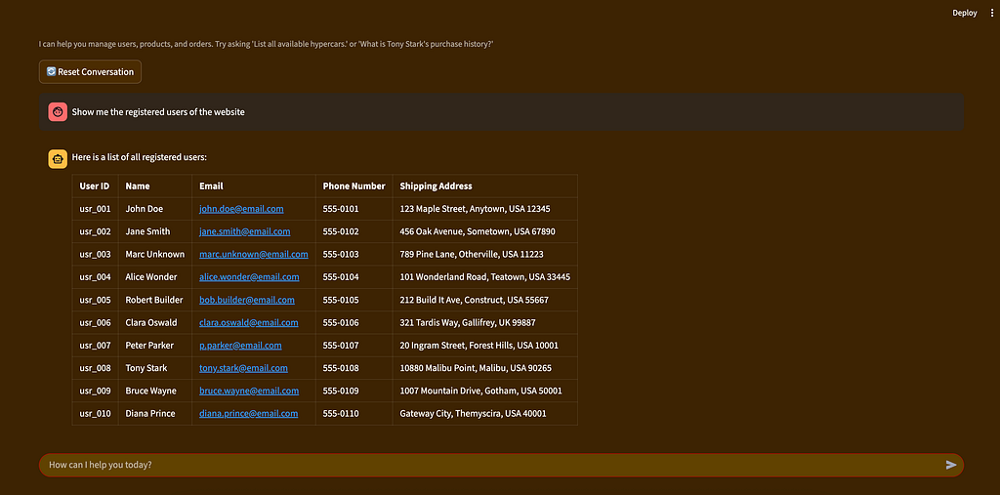
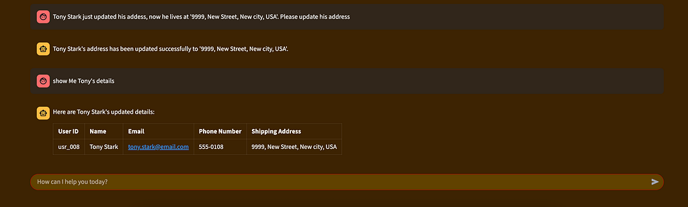

Building an MCP Server with FastMCP: A Hands-On Demo
A hands-on walkthrough of building a containerized e-commerce MCP server with FastMCP, PostgreSQL, and a Streamlit UI — fully runnable with docker compose.
Alessandro Garavaglia | 8 min read | Sep 9, 2025
If you've been following the developments around the Model Context Protocol (MCP), you've probably seen people compare it to the USB-C of AI apps. It's a fitting metaphor: MCP standardizes the way language models connect to external capabilities, so instead of bespoke integrations and brittle APIs for each project, you get a single, predictable interface for agents to discover and use whatever you decide to expose.

When connecting N agents and M tools, it is necessary to design NxM connections to make the tools available to all agents.
The magic here is separation. Instead of wiring your agent directly into your database (and handing over credentials in the process), you delegate that connection to an MCP server.
When connecting N agents and M tools, with an MCP server it is enough to design N+M connections, reducing complexity and creating a decoupling layer.

The server holds the secrets, validates requests, and decides exactly what the agent can do, whether that's reading a user record, updating inventory, or triggering a long-running process. The agent simply calls the server's declared capabilities.
Three pillars of an MCP server
Before we dive into the demo, it's worth taking a minute to understand the three primitives MCP servers can expose.
-
Tools are callable actions. You can think of them as remote functions with typed inputs and outputs: "create_user," "update_order," "generate_report."
-
Resources are read-only data endpoints, like "data://users" or "data://orders/order/{id}." They give clients a stable way to fetch data without exposing raw queries.
-
Prompts are reusable templates the server can publish for clients, ensuring consistency in style, structure, or instructions across different use cases.
FastMCP, the Python SDK I'm using here, makes these concepts surprisingly straightforward. You annotate a function with a decorator, define its input/output schema with Pydantic, and you're done, no protocol wrangling needed.
The demo architecture
To make this concrete, I built a small e-commerce example that runs entirely in Docker. Here's the docker-compose.yaml:
version: '3.8'
services:
postgresdb:
image: postgres:16
container_name: postgres_db
environment:
POSTGRES_DB: ${POSTGRES_DB}
POSTGRES_USER: ${POSTGRES_USER}
POSTGRES_PASSWORD: ${POSTGRES_PASSWORD}
volumes:
- ./data/init.sql:/docker-entrypoint-initdb.d/init.sql
- ./data/postgres_data:/var/lib/postgresql/data
ports:
- "5432:5432"
healthcheck:
test: ["CMD-SHELL", "pg_isready -U ${POSTGRES_USER} -d ${POSTGRES_DB}"]
interval: 10s
timeout: 5s
retries: 5
mcp_server:
build:
context: ./mcp_server
container_name: mcp_server
depends_on:
postgresdb:
condition: service_healthy
ports:
- "8000:8000"
env_file:
- .env
ui:
build:
context: ./ui
container_name: ui_chatbot
depends_on:
- mcp_server
ports:
- "8501:8501"
env_file:
- .env
volumes:
postgres_data:
This docker-compose file handles the creation of the three services we need for the demo:
-
The database (
postgresdb) holds the users, products, and orders. Aninit.sqlfile will manage the initialization of the data within the database. -
The MCP server (
mcp_server) is the only service that talks directly to it. -
Finally, the UI service (
ui) acts as the agent's front-end, talking to the MCP server and providing an interactive UI.
This is an important design choice that lies at the core of MCP servers: the agent never touches the database directly. No embedded SQL, no leaked credentials, no risk of an LLM deciding to drop tables because it misunderstood a prompt.
Peeking into the code
The entry point
The entry point, mcp_server/main.py, just wires together the different domain servers, one for users, one for products, one for orders:
from fastmcp import FastMCP
from servers.users.server import user_server
from servers.products.server import product_server
from servers.orders.server import order_server
## Initialize the main MCP application
mcp_server = FastMCP("Ecommerce")
## Mount the individual servers with their respective prefixes
mcp_server.mount(user_server, prefix="users")
mcp_server.mount(product_server, prefix="products")
mcp_server.mount(order_server, prefix="orders")
if __name__ == "__main__":
mcp_server.run(
transport="http",
host="0.0.0.0",
port=8000,
log_level="debug",
)
That's all it takes to assemble a multi-domain MCP server: each sub-server is self-contained, with its own tools, resources, and (if needed) prompts. You can add a new domain with a single mount call.
The Users server
Here's what server for the users looks like (keep in mind that orders and products servers have similar structure and functionalities):
from typing import Any
from fastmcp import FastMCP
from backend import handle_errors
from servers.users.helpers import (
NewUserInfo,
UserUpdateInfo,
_fetch_users,
_fetch_user_by_id,
_add_new_user,
_modify_user
)
## Define the server for user-related operations
user_server = FastMCP("Users")
## --- MCP Resources (Exposing the Table via GET) ---
@user_server.resource("data://users")
@handle_errors
def get_all_users() -> list[dict[str, Any]]:
"""
Exposes the entire users table.
Returns:
A list of dictionaries representing all users with full details.
"""
return _fetch_users(brief=False)
@user_server.resource("data://users/user/{user_id}")
@handle_errors
def get_user_by_id(user_id: str) -> dict[str, Any]:
"""
Exposes a single user record from the users table.
Args:
user_id: The ID of the user to retrieve.
Returns:
A dictionary representing the user, or a failure message if not found.
"""
user = _fetch_user_by_id(user_id)
if not user:
return {"status": "failure", "message": f"User with ID '{user_id}' not found."}
return user
## --- MCP Tools (to be used by an agent) ---
@user_server.tool
@handle_errors
def add_new_user(user_info: NewUserInfo) -> dict[str, Any]:
"""
Adds a new user with the provided information.
Args:
user_info: A model containing the new user's name, email, and optional fields.
Returns:
A dictionary with the new user's ID and a success status.
"""
return _add_new_user(user_info)
@user_server.tool
@handle_errors
def modify_user_info(user_id: str, updates: UserUpdateInfo) -> dict[str, Any]:
"""
Updates one or more details for an existing user.
Args:
user_id: The ID of the user to modify.
updates: A model with the fields to update. Only non-null fields will be updated.
Returns:
A dictionary confirming the update.
"""
return _modify_user(user_id, updates)
@user_server.tool
@handle_errors
def get_user_data(
data_detail: str
) -> list[dict[str, Any]] | dict[str, Any]:
"""
This is a tool that allows to query the database without calling the specific
resource (so far, basic implementation with mcp adapters do not allow to pass parameters).
data_detail is the URL of the data to query. It has to be of the format:
- data://users/user/{user_id}: for a specific user given its id
- data://users: all the users
Args:
data_detail: the data to retrieve
Returns:
A list of dictionaries representing the data.
"""
if data_detail.startswith("data://users/user/"):
user_id = data_detail.split("/")[-1]
return _fetch_user_by_id(user_id)
elif data_detail == "data://users":
return _fetch_users()
else:
return {
"status": "failure",
"message": f"Invalid data detail: {data_detail}. Please use a valid format."
}
FastMCP provides out-of-the-box decorators to declare tools, resources and prompts, making very easy to build the MCP server. For example, it automatically handles the conversion of the docstring of the Python function into the description of the tool visible to the AI agents.
In just a few lines, we've exposed two resources for reading user data, and three tools for creating and updating it. Pydantic models (NewUserInfo, UserUpdateInfo) handle validation automatically, and the @handle_errors decorator ensures consistent error messages.
import uuid
from pydantic import BaseModel, Field
from backend import db_connector, parse_output
## --- Pydantic Models for Data Validation ---
class NewUserInfo(BaseModel):
name: str = Field(description="Full name of the user.")
email: str = Field(description="Unique email address of the user.")
phone_number: str | None = Field(None, description="Phone number of the user.")
shipping_address: str | None = Field(None, description="Shipping address for the user.")
class UserUpdateInfo(BaseModel):
name: str | None = Field(None, description="New full name of the user.")
email: str | None = Field(None, description="New email address of the user.")
phone_number: str | None = Field(None, description="New phone number of the user.")
shipping_address: str | None = Field(None, description="New shipping address.")
## --- Internal Database Logic ---
@db_connector
def _fetch_users(cur, brief: bool = False):
"""
Fetches user data from the database.
"""
query = "SELECT user_id, name FROM users;" if brief else "SELECT * FROM users;"
cur.execute(query)
return parse_output(cur)
@db_connector
def _fetch_user_by_id(cur, user_id: str):
"""
Fetches a single user by their ID.
"""
cur.execute("SELECT * FROM users WHERE user_id = %s;", (user_id,))
return parse_output(cur, one=True)
@db_connector
def _add_new_user(cur, user_info: NewUserInfo):
"""
Adds a new user to the database.
"""
user_id = f"usr_{str(uuid.uuid4())[:8]}"
cur.execute(
"""
INSERT INTO users (user_id, name, email, phone_number, shipping_address)
VALUES (%s, %s, %s, %s, %s) RETURNING user_id;
""",
(user_id, user_info.name, user_info.email, user_info.phone_number, user_info.shipping_address)
)
return {
"user_id": cur.fetchone()[0],
"status": "success"
}
@db_connector
def _modify_user(cur, user_id: str, user_data: UserUpdateInfo):
"""
Updates an existing user's data.
"""
update_fields = {k: v for k, v in user_data.model_dump().items() if v is not None}
if not update_fields:
raise ValueError("No fields provided to update.")
set_clause = ", ".join([f"{key} = %s" for key in update_fields.keys()])
values = list(update_fields.values()) + [user_id]
query = f"UPDATE users SET {set_clause} WHERE user_id = %s;"
cur.execute(query, tuple(values))
if cur.rowcount == 0:
return {"status": "failure", "message": f"User with ID '{user_id}' not found."}
return {
"user_id": user_id,
"status": "success",
"updated_fields": list(update_fields.keys())
}
There is a separation between what is exposed to the agent in terms of tool (for example get_user_data) and the internal _fetch_users function. The agent doesn't care how _fetch_users gets its data (in this case it's a PostgreSQL query) but it could just as easily be a REST call or a spreadsheet read.
Note: the @db_connector decorator manages the creation of the connection to the PostgreSQL database with the psycopg2 package.
The server in action
The streamlit UI allows to interact directly with the agent, that is built using LangChain, where the chosen LLM is Gemini 2.5 Flash (it is free).
As you can see, you can make requests via the Chat and the Bot was actually able to answer using the data contained in the PostgreSQL database and act on it.
Simple Q&A
When asked to show the registered user, the agent correctly invoked the get_user_data tool to reply me with the content of the users table.

Update a user's info
Another request was to update Tony Stark's address.

The agent correctly modified the record in the database, by using the dedicated tool provided by the MCP server.
In this case, the agent was not only able to read data, but through the tool it was able to act on a system.
Here in the demo, we implemented the logic of "updating a user's info" as modifying a record in the PostgreSQL database, but it can be replaced with any operation (for example, triggering an internal API for the correct process execution).
Remarks
Because this is a demo, a few corners have been cut in the interest of clarity and time:
-
For some operations, I defined both a tool and a resource for fetching data, even though in a "real" implementation you might call the resource directly. To make that distinction work in an agent workflow, I'd have to explicitly build the execution graph using LangGraph, because the resources cannot be imported directly as the tools;
-
The demo uses Gemini 2.5 Flash as the model backend. At the time of writing, this forced me to re-initialize the agent class after every interaction (this is a known issue on Github), and it works because I am managing the memory of agent manually as a list of messages;
-
I didn't implement any prompts. For this use case, the interactions were simple enough that I didn't need prompt standardization, but in a larger or more complex project, prompts are an invaluable way to ensure consistency across tools.
These choices keep the example accessible, but if you're planning to take MCP into production, you'll want to revisit them.
Code repository
I wrote the code for this demo using Gemini 2.5 Pro as AI coding assistant. If you want to give a look at the demo and run it yourself, the solution is containerized and deployable via docker-compose. You can find it here on Github:
https://github.com/agaravaglia/fastmcp-ecommerce-demo
This post is not meant to provide definitive answers or prescriptive guidance. Its goal is to spark reflections and discussions on the topic.
The views expressed are my own.
Tags: Agentic AI, AI, MCP Server, AI Agent, Digital Transformation